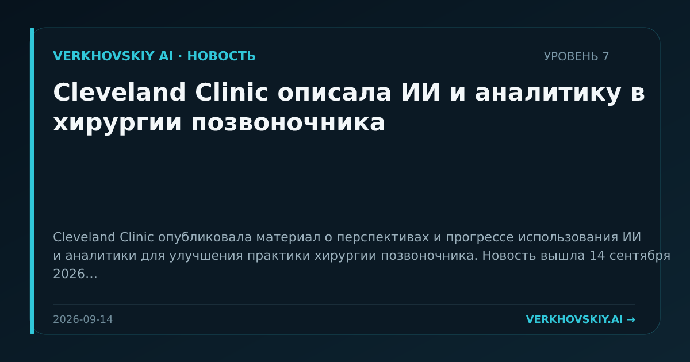

Cleveland Clinic описала ИИ и аналитику в хирургии позвоночника
Cleveland Clinic опубликовала материал о перспективах и прогрессе использования ИИ и аналитики для улучшения практики хирургии позвоночника. Новость вышла 14 сентября 2026 года. Почему это важно: Клинические области продолжают оформляться как отдельные контуры прикладного ИИ-знания. Для СРТ это означает рост спроса на перевод медицинских данных в операционные решения.